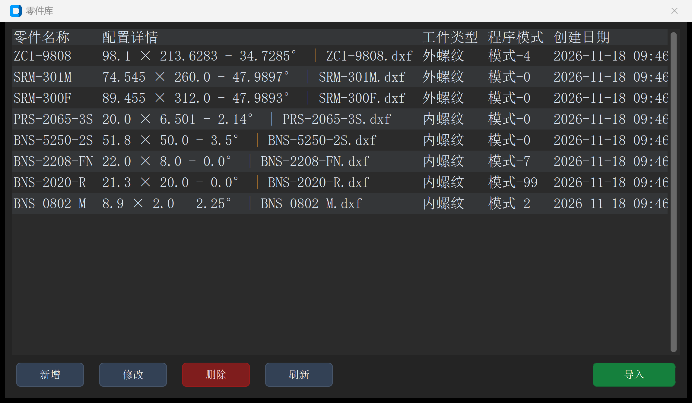

8.1 零件库管理
点击顶部 工具 -> 零件库 打开独立窗口，用于统一归档、检索并一键回填不同型号工件的全界面参数。

零件库实机运行截图">五列表格与排序
点击任意列标题均可按升序/降序双向排序：
零件名称：产品代号或图号（如BNS-5250-2S、ZC1-9808）；配置详情：自动汇总核心螺旋参数与源 DXF，格式为<工件中径> × <导程> - <砂轮安装角>° | <DXF文件名>（如51.8 × 50.0 - 3.5° | BNS-5250-2S.dxf）；工件类型：内螺纹或外螺纹；程序模式：对应机床代码模板（如模式-0、模式-4、模式-99）；创建日期：档案建立或更新时间戳（YYYY-MM-DD HH:MM）。
三文件自包含档案
点击 新增 后，在 ~/.igd/PartsLibrary/<零件名>/ 下保存全套三文件配置包：
igd_config_main.json：基本参数与高级参数全部设置；igd_config_draw.json：绘图工具全子模块参数快照；igd_config_tool.json：工具箱全子模块参数快照。升级或迁移电脑时，将
~/.igd/PartsLibrary/目录整体拷贝至新机对应路径并点击刷新即可恢复全部档案。
五大操作按钮
新增：以当前主界面已调好参数创建新零件档案；导入：选中表格行后一键回填至主界面各选项卡，立即可运行生成代码；修改：重命名零件档案或覆写最新参数；刷新：重新扫描目录加载外部拷贝的档案；删除：移除选中的历史档案。